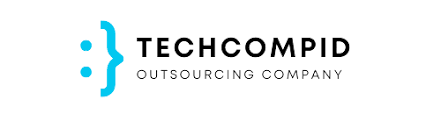
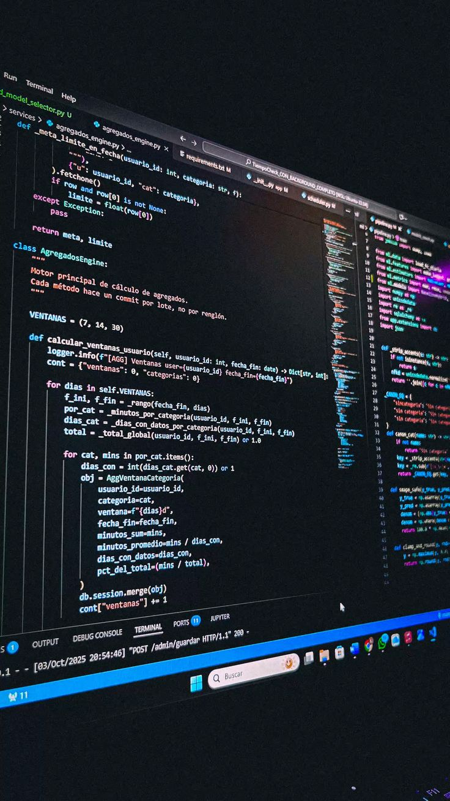
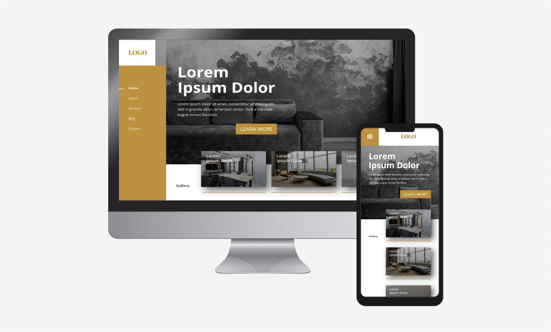

Halo Semua 👋 , Saya
Leoraflino rahmat
Portofolio ini menampilkan proyek dan kontribusi saya sebagai pengembang di bidang teknologi, rekayasa perangkat lunak, serta implementasi sistem cerdas.
Hubungi Saya
Tentang Saya
IT Programmer & Lulusan S1 Sistem Informasi
Saya adalah mahasiswa aktif Sistem Informasi Semester 6 di Universitas Merdeka Malang. Fokus utama saya adalah merancang dan mengimplementasikan sistem yang efisien, terukur, dan stabil menggunakan pendekatan full-stack development serta integrasi kecerdasan buatan.
Kontribusi Profesional & Akademik
Bertanggung jawab penuh atas siklus pengembangan sistem informasi, optimasi performa web komersial, kustomisasi antarmuka responsif, serta riset berbasis Computer Vision untuk solusi otomasi interaktif.
Spesialisasi & *Tech Stack* Inti
Sebagai pengembang, spesialisasi saya ada pada pengembangan sistem web modern serta skrip otomasi data. Keahlian utama saya meliputi:
- Backend: Python.
- Database: MySQL.
- Frontend Dasar: HTML, CSS, JavaScript (Bootstrap Framework).
Mari Terkoneksi
Saya selalu terbuka untuk kolaborasi, diskusi proyek, atau peluang profesional baru.
Project
Berikut beberapa project yang pernah dikembangkan

Drop Dead Store Website
Lihat DisiniWebsite e-commerce modern yang responsif di HP. Dilengkapi fitur filter kategori produk, keranjang belanja, dan integrasi pesanan via WhatsApp API.

kopi kenangan senja Website
Lihat DisiniWebsite toko online kopi yang responsif di HP. Dilengkapi sistem keranjang belanja dan tombol interaksi pesanan langsung terintegrasi dengan WhatsApp API.

website sekolah
Lihat DisiniWebsite profil sekolah resmi yang responsif di HP. Menyediakan informasi lengkap mengenai program ekstrakurikuler, fasilitas, berita sekolah, serta integrasi tombol pendaftaran PPDB online.

website toko online
Lihat DisiniWebsite e-commerce toko baju (Rafli Fashion) yang responsif di HP. Dilengkapi sistem keranjang belanja dan tombol checkout pesanan langsung otomatis via WhatsApp API.
Hand Gesture Detection
Lihat DisiniAplikasi desktop pengenal gerakan tangan real-time menggunakan framework MediaPipe dan Python.
Web company profile
Lihat DisiniWebsite profil perusahaan edukasi modern yang responsif di HP. Menyediakan informasi program materi keahlian, fitur kursus, dan layanan belajar digital.

website coffe kopi senja
Lihat DisiniKopi Senja adalah website profil kedai kopi modern yang responsif di HP. Dilengkapi fitur pencarian menu instan dan tombol pesan langsung via WhatsApp untuk mempermudah pelanggan.

Company Profile
Lihat DisiniWebsite profil perusahaan agensi (Rumahrafli) yang responsif di HP. Menyediakan informasi daftar layanan, portofolio proyek, profil tim, dan kontak kerja sama bisnis.
Riwayat Pendidikan
Universitas Merdeka Malang
S1 - Sistem Informasi

Pengalaman
Pengalaman Kerja, Freelance, & Magang
Pernah dan sedang bekerja pada perusahaan berikut



Tulisan Blog
Beberapa tulisan blog yang saya buat .
Cara Menghubungkan pemesanan produk di Website Langsung ke WhatsApp
Catatan ringkas tentang bagaimana memanfaatkan WhatsApp API untuk membantu UMKM menerima pesanan dari website toko online secara instan, praktis, dan tanpa sistem yang rumit...

Langkah Awal Menguasai Front-End Web Development dari Nol
Berbagi cerita dan dokumentasi pengalaman seru selama belajar HTML, CSS, hingga JavaScript interaktif hingga berhasil menciptakan berbagai proyek website portofolio...

Pentingnya Desain Responsif (Mobile-First) untuk Website Zaman Sekarang
Mengulas alasan mengapa tampilan website harus tetap rapi dan konsisten saat dibuka di layar HP, serta bagaimana framework CSS membantu mempercepat proses kodingnya...